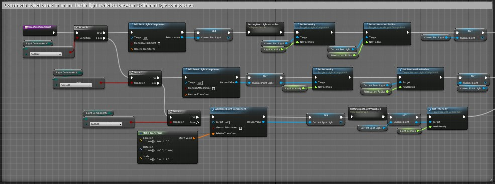

We'll be making blog posts every once in awhile to talk about some of the progress we're making and things that we've been working on. We've been creating some pretty cool stuff, so this is your chance to learn about how we do it!
Reflections - Third Eye
5/14/2020
Development for Pestilence is wrapping up for the semester and we’re sad to see it come to an end. Virtual SGX is tomorrow, May 15th and prior to releasing our game, we wanted to take some time to debrief and reflect on our experiences and personal development during the past year.
Joseph Matzelle - Producer | Audio, Marketing
Since over a year ago, I’ve been wrestling with what I call the Product-Education Meta: Should we judge our experience on what we produce, or what we learn, and are they mutually exclusive? I now believe it is possible to achieve both. Pestilence is a phenomenal product, and we should be proud, but what we learned is still so valuable. There are the nuanced skills like modeling and rigging for the artists, and AI and code readability for the programmers, but there’s something more important too, in my opinion. People make games. Bold, italicized, underlined, people. The ways we interacted, collaborated, debated and goofed around made our team what it is, and that team made the final product. As producer, I oversaw everyone do this amazing thing where we would convene for ideas, then break for implementation, over and over again like the tides. It was nearly seamless, and we had our struggles, but they pale in comparison to our successes. No one makes their dream game at Stout; sorry to crush anyone’s dreams! Instead, you make friends, relationships, and something magical that is greater than the sum of its parts. We joke about how I wanted to make “Sand Castle Pikmin” back in August, but I don’t think about my favorite idea anymore, at all. I only think about Pestilence, and if given the chance to go back, I wouldn’t change a thing. So, yes, you can have both the polished product for your portfolio and an educational, endearing experience.
Jake Anderson - Programming Lead | Gameplay design, Level design
Nobody could've predicted the events of the past year. Working on Pestilence has made me much more aware of what goes into making a game. There's dedication, problem solving, and the most important, teamwork. Having a team that cares about the project and each other really helped us thrive these past three months. Even when there were some bad days I could hop on to the discord and see someone helping another teammate work on a problem or getting feedback about a new addition. We build each other up during times of uncertainty. I wouldn't give back any of the memories I've made or the experience I've gained for things to be different. I'm so thankful for my teammates and proud of what they've done and how they've grown. Congratulations Third Eye and thank you, I would never have thought we'd be where we are now.
James Cerasani | UI/UX design, Player controls, Menus
Working on Pestilence has greatly enhanced my experience as a programmer. Getting to work with this amazing team has been a huge learning experience and I am extremely proud of the game we all made together. The core design of Pestilence is simple but very fun, and the way we have built the game definitely fits the limited scope of one academic year, but if we choose to go further with it the game is very much expandable. Even with the craziness of this year, our team managed to stay together and not only finish the game, but make the game an incredible success. I know that wherever the members of this team end up, they’ll all be doing great things.
Michael Lange | Gameplay programming, Shaders, AI, Lighting, Marketing
Working on Pestilence has been one of the best game design, learning and team experiences I have had. Hearing all the creative ideas and constructive feedback this past year has helped me grow as a game designer. I am glad we chose Unreal engine because it allowed me to expand my knowledge and experience developing in a new environment and helped me improve on my skills as a programmer. I was lucky enough to work with such passionate, creative, hard working, and driven individuals. From the beginning I could tell that our team was ready to go, to hit the ground running and start making something we would be proud of. We had so many great ideas and we were so passionate, that it took a whole month before we even got started. I believe that long deliberation led to us having such a concise, focused view on our game that the team began rapidly building. With all of that hard work, it led to something I am extremely proud of. I am glad that I took a gamble and chose a new professor I had never worked with before. It led me to a group of individuals that would help me become a better programmer, a better teammate, and a better game designer. It is an experience I wouldn't trade for the world.
TJ Pfaff | AI, Gameplay design, Encounter design
This past year has been something to remember. Working on Pestilence has been
something that has not only increased my skills as a programmer but has increased my interest and knowledge in game design. Unreal has been so much fun to work with and learn and even now has so much more to offer. This team has been something only someone could dream of being on. I wouldn’t trade it for anything. This group was so incredible to work with and learn from, not only on the programming side but to learn more about what goes on with the art side of game design and what it takes. I learned so much about artificial intelligence and what it takes to create it, as well as learning from my computer colleagues about what they were programming and how to make and write better code. This final project is amazing, there really isn’t much more to say about it, we created something to be extremely proud of and I am so happy that I get to be apart and was part of this amazing game. I wouldn’t trade this for anything, this team was something to never forget.
Megan Southwick - Art Lead | Character design, Rigging, Animation, UI design
This past year has been a whirlwind of experiences, and even though this year didn’t go as planned, it was definitely the most memorable and rewarding. I still remember getting the email with our team assignments and being super excited to see who my teammates were. I’ve never been more excited to go to class than I was to go to capstone. With how much effort we put into this project and how polished of a game we were able to make, I easily forget Pestilence grew from a dreams/nightmares concept I had originally pitched. Everyone worked to make this game their own, and because of that we are all that much more proud of it. Working on Pestilence allowed me to grow as a character artist, a rigger, a leader, and as a person. I learned so much from working with such an awesome group of people that I can’t imagine working with anyone else. The circumstances we found ourselves in during spring semester made development memorable, but it was the team and the ups and downs we shared that made the capstone experience something I will never forget. From Day Zero at the Raw Deal, to Fall SGX, M+Dev, and streaming with IGDA, and now to launching Pestilence tomorrow, I’m so incredibly proud of my team and our project and I am beyond thankful for everything.
Nate Apolloni | Environment design, Creature design, Prop modeling, Particles
Honestly, I am not sure what to say here. I've never been too good at reflections but I'll throw my thoughts out. To start with, if someone asked if I would switch teams and games with the knowledge I have now, the answer would be a solid 'NO'. This year of hard work has been eye opening, and has also sparked a few new passions for me, such as Texturing and Particle Systems, but I would not want to have those experiences without this team. The amount of things I have experienced and learned with this group in the last year, from the technical aspects to the social ones cannot be understated. So as I said, I'm not the best at these but I hope that both you and my team can appreciate just how much they and I care for this project and our time together.
Alex Greenberg | Gameplay design, Encounter design, Level design, Environment Design
Being a part of the creation of Pestilence has been one of, if not the, most enlightening and rewarding experiences of my time at Stout. Having the privilege of working with the reverent Third Eye team for a whole year and being immersed in the extensive and unwavering efforts of the team’s individuals has opened my eyes to the feats a team can accomplish when given the right drive and direction. I have discovered newfound passions for various facets of game design and much of that learning and discovery has only been possible because of the vigilant dedication of our programmers. By upholding a strong centralized vision for the team as a whole, I was able to assist in the building of relationships between programmers and artists, resulting in some truly inspiring collaboration and asset output. I frequently revelled in the stunning visuals our artists produced, all of which making my task of building the world of Pestilence not only fluid and gratifying, but also fun. Third Eye’s efforts enabled both a fulfilling experience and a robust and rewarding outcome. I am immensely proud of our team and honored to be a part of it. Pestilence is Bestilence.
Ali Lloyd | Environment design, Prop design, Marketing, Animation
I feel so honored and proud to have been on such an amazing team as Third Eye. Everyone from the start has been so supportive of each other's ideas and I believe great friendships have formed from our experience. The game we made started from something completely different but evolved into something so amazing that I am proud to say I worked on and am eager to share with as many people as I can. I wish I had another year to spend with our team because everyone made such amazing things and I can only imagine how amazing everything everyone will go on to make in the future.
Hannah Schenk | Creature design, Narrative design, Rigging, Shaders
Being a part of this team has been a super rewarding experience. I had the opportunity to learn more about a lot of things, especially about technical art and creature modeling. My teammates were an absolute joy to work with, and although Pestilence isn’t the kind of game I imagined I would make, I think we created something really cool that showcases the best of all our abilities. Pestilence is Bestilence!
Emily Wegner | Digital painting, Cinematic development
Being a part of Third Eye’s team was a very valuable experience. As their cinematic artist, I had a stand-alone job that was unique apart from the team, and I completed this job with independence while still working alongside other members. Even as I mostly worked away from Third Eye, I still felt involved with the development of the game and the roles everyone played, finding much satisfaction in watching how the team collaborated and problem-solved. Creating the cinematic paintings challenged me in many beneficial ways, and I found myself with a higher work ethic, stronger motivation, and more passion for creativity as the game unfolded. Escaping into the world of Pestilence while I created content for the game was more of an enjoyable pastime than an obligation; I loved bringing the characters and concepts to life, allowing for more immersion into the game’s narrative. I worked very hard for this game, and the team itself never failed to express their appreciation of my efforts, always praising my finished work. I am so proud of the outstanding game this team has delivered. Pestilence marks the first collaborative large-scale project I have worked on thus far, with many more to come.
A big thank you to everyone who followed our progress and supported our work along the way. We can’t thank you enough! We have yet to determine if development on Pestilence will continue, but follow our itch.io page in the meantime.
See you all at Virtual SGX!
TJ Pfaff - Enemy AI
5/9/2020
Hello everyone! My name is TJ Pfaff and I am a programmer for Third Eye. As a programmer for Pestilence, I have worked mainly with the Artificial Intelligence (AI) for the game. Coincidentally, this is what I am going to talk about today.
Since the AI is such a big part of this game, we wanted all of the enemies to have a certain feel for each so that they pose a different challenge to the player and make them think when they first encounter them. To start off, I designed a base AI behavior tree to give them some behaviors that they all shared. Since the spider and wall-eye do not move in the real world, making their behavior tree was a little easier since I didn’t have to do anything in the real world for them.
For the rats, they are a patrolling enemy so what I did was to create some points around the map that would be brought into an array so that they could get the position of those coordinates and move to that specific position, and then from there they could go to the next and so on. The rats didn’t just patrol though, they attacked, so I used perception so that when they saw the player, they would run towards the players location and if they got close enough, deal some damage to the player and take down their health. But that’s not all, we thought that the rats needed to keep looking for the player after they saw them, so we designed a searching part of the tree to find the players last known location and turn the rat towards that location to see if it could lock back onto the player.

Since the enemies had to have different stages based on what reality they were in, real world or mindscape, with the help of Joe’s amazing mindscape variable, I was able to utilize that and create a boolean to see whether the variable was true and the enemies were in the mindscape, in which they would run away, or in the real world where they would attack and hurt the player.
Overall this was an amazing experience to work with and learn from. It taught me a lot about AI’s, how they work, and so much more that they are able to do inside of Unreal. That’s all I have for today, be sure to keep updated with our social media for more cool stuff and hope you guys are as ready as we are for the final product!
Team Management - Joseph Matzelle
5/6/2020
As I like to tell the team, “Eyeballs, take a look!” My name is Joseph Matzelle, and I have the pleasure of being Producer for Third Eye’s Pestilence.
I thought being Producer would be exciting and stressful. I was prepared to be the one to moderate intense design disagreements and bite the bullet to chastise team members who weren’t pulling their weight. In reality working with Third Eye on Pestilence has been an uninterrupted joyride of production and camaraderie. I now understand how Football coaches can look fat on the sidelines and still be in charge; it’s the team that does all the work!
Mind you, I try to keep everyone on track. I think Third Eye performs so well because our communication is exceptional. Our remote work Discord rarely goes a few hours without a ping from someone doing outstanding work. Our repository just hit 1100 pushes, and we aren’t even done yet.
Every step of the way, there have been hurdles. Imagine drawing a card from the “Random Events” deck and getting “go home, and don’t come back.” That was us, as we tearfully emptied Stout’s game lab. However, after a brief recovery period, the whole team is back to working at or above the capacity they were before quarantine began. I am so proud of them.
Along the way, I was taking candid pictures of the team as they did their thing. Maybe it could have been part of a development montage, but our priorities have changed lately. Regardless, I want to share a few here:
Health Light System - Michael Lange
4/30/2020
Hello everyone! I'm a programmer for Third eye and one of the things I've been working on for our game is the health lighting system.
We are using this system to represent the player's health in the game. When the player takes damage in the game the lighting in the level changes to different colors to represent how much health the player has left. We wanted to try to have very minimal UI and not clutter up the screen with healthbars as much as we could .
When designing this system I wanted to make it flexible so that Level designers would have an easy time placing the lights into level without having to worry about them having to connect the health system to the player. Additionally I wanted to have it so any of the light types such as a point light or a spotlight could be used easily just by changing one option. Doing this makes it so much easier for the designers to quickly create the Health lighting for the level.

Overall, much of the work I have done this year is creating objects that make it flexible and easy to be put in the game!
That’s it for now! Stay tuned for more dev blogs, updates, and other content! We’ll be posting regularly on Facebook, Instagram, and Twitter as we continue to work remotely for the rest of the semester!
Texturing Allos - Nathaneal Apolloni
4/23/2020
Greetings and salutations! I’m Nathaneal Apolloni, one of the artists on Third Eye. My work includes some of the environment models, some of the texture work, and many of the particles seen in game. Today however we will focus my texturing work on our lead character, Allos, the god of pestilence.
So to begin with I would like to start with the fact that Allos current form was not his initial look. We instead had a much older version of Allos that was going to have clothing added on later to simulate physics, this was going to be done by Allos character modeler Megan Southwick using Marvelous Designer. However, that did not pan out, but I did create a texture for that model, so here is a nice look at our initial Allos model used until last winter.
Wow, that is something alright, anyway, since then I have been tasked with updating our new Allos model with textures (in which there were 3 different versions). I did this using a program called Substance Painter, which if you have not heard of it shares many similarities with programs such as photoshop. However, rather than paint on a 2D surface, you can paint directly onto a 3D model, using layers and many other interesting aspects to get the look you want. Here is a look at Allos model in Substance Painter.
So in this image we can see the 3D model on the left side, the UV layout on the right (or as I like to call it the bear-skin rug version), a list of materials that Substance comes with on the bottom, and a list of layers on the far right side. Allos is made up of several different layers, as you can
see, which I made into the various articles of clothing and such he is made from, allowing me to seperate the textural details with masks. Now though we have a final version of Allos that has been textured and implemented into the game, here's a nice look at the finished version.

Well that’s all I have for you folks now, keep checking back for more Dev Blogs from other team members as we approach the end of our production. Don’t forget to follow our Twitter, Facebook, and Instagram either as they will keep you posted on any updates we have.
Menus - James Cerasani
4/16/2020
Greetings everyone! I am a programmer for Third Eye, and I have been working diligently on setting up all of the menus for Pestilence!
I had a goal in mind of trying to make the menus as feature-friendly as possible, including things like level selection, graphics and sound settings, as well as a model viewing room to help the artists show off their amazing work!
As someone who has been passionate about games for most of their life, I have taken inspiration from many games menus both old and new.
The work I have done has taught me a lot about how Unreal Engine's blueprint coding systems work, including how to make UI code affect things in the game world, how to make different sections of code interact with each other, making my own custom UI buttons, and much more!
Shaders - Hannah Schenk
4/9/2020
Hello everyone! I’m an artist for Third Eye, and I’ve been working on a shader that will be used for the victims when the player succeeds in destroying the enemies in the mindscape.
After Allos leaves the mindscape, he returns to the real world and the victim is finally allowed to be at peace. To represent this, I decided to create a shader that will make the victim appear to dissolve into thin air.
For those who don’t know, a shader is a small program used in computer graphics. In games, they’re most often used for post processing effects or special effects. In Unreal Engine, it’s possible to use the Blueprints node based programming language in the material editor to make shaders.
To make a dissolving shader, I generated a noise texture (and changed its appearance a bit with some math) to attach to the opacity channel of the material. This creates organic shapes that will be “cut out” of the victim’s mesh and make it look like there are pieces of him missing. In order to create glowing edges around each of these pieces, I used another noise texture and gave it a high amount of contrast. This makes the noise look more like squiggly lines. When given a color and attached to the emissive channel, we now have glowing edges!
(Sidenote: the second noise texture I used is something called Perlin noise. It’s a more organic texture often used for creating natural looking clouds and landscapes. The person who created the algorithm won an Academy Award for it!)
Next is to make the victim look like he’s actually dissolving. In order to do that, I have a parameter that changes how much of the victim is transparent. By increasing and decreasing this parameter, the amount of the mesh that is “dissolved” changes. Eventually, this parameter will be changed programatically so that the victim dissolves during gameplay.
I hope this post gave some insight into the work we're doing and how cool it's going to look. Be sure to attend the virtual SGX on May 15th to see the finished game!
Mocap Madness - Megan Southwick
4/1/2020
Hi everyone! I’m Megan Southwick, art lead and character artist for Third Eye. As a character artist for Pestilence, my responsibilities include sculpting and rigging Allos and the victim model. In addition to creating the characters, another responsibility of mine, and the topic for today’s blog is motion capture animation.
If you aren’t familiar with mocap, it is the process of digitally recording an actor’s movement to animate a character. You’d probably recognize the suit worn by the actor; it’s skin tight and has a bunch of little balls, called markers, attached to it. As the actor moves, cameras record the movement of the trackers in 3D space, and this movement can later be applied to a character’s skeleton to animate it.
At UW-Stout, we are fortunate to have a mocap studio right on campus! During our last sprint, the majority of Third Eye got trained to use the studio and we were able to record lots of animation data for Allos and the victim. To use the mocap data, I first had to import the data into a program called Shogun Post. Using this program, I can scrub through the animation and see if any markers got lost and needed to be reattached to the digital skeleton. Once the data is cleaned up, it can then be exported and used in Maya to animate.
The process of attaching mocap data to a rig in Maya can be simply described as assigning the correct joints in the mocap skeleton to the joints in the character’s skeleton in order to map the animation to the character. When done correctly, pressing play in Maya’s timeline will play the mocap animation through the character, and from there the animation can be exaggerated to create a game-worthy animation! When not done correctly… things get weird….


Stay tuned for more dev blogs, updates, and other content! We’ll be posting regularly on Facebook, Instagram, and Twitter as we continue to work remotely for the rest of the semester!
Blog_01 - Jake Anderson
3/11/2020
Hi, I'm Jake Anderson, Third Eye's programming lead. We're going to start doing bi-weekly blog posts about our game Pestilence. Today I'm going to share a cool new feature that has been added since you last saw us at SGX.
First off, thank you to everyone that came to our booth and participated in our feedback survey. We found a lot of the feedback constructive and took off this semester with incorporating these changes into our design.
One challenge we had encountered pretty early on in development was making our blink work on angled surfaces. Without going too heavy into specifics, the blink wouldn't work on angled surfaces because it was only concerned with two dimensions when calculating the blink point. This wasn't too big of a problem as the areas the player needs to blink are flat, but we noticed and received feedback that the player would want to keep blinking when they got to the ramps in the level. So we had to make a decision. Should we dedicate more time developing this mechanic, or move forward and design around this limitation? I thought of this problem over winter break and had an idea come to me late in the night.
This idea became the basis for what is currently integrated into the game and was a major key for our design for level two. To simplify this idea as much as possible, our character needs to be able to blink a set distance without clipping into other objects. This is done by using a collision line from the initial point to a set distance point where it would end up. If the line returns a collision, it instead uses that point as the final position. This however does not account for things that may be above or below the player. For this, I came up with an algorithm that checks for collisions above the player if an initial collision is returned, and it will also ground the player if no collision is returned initially. This wasn't my first try implementing my idea, but it came to me after successfully getting the player to blink up ramps.
I wanted to do something similar for going down ramps. This wasn't possible because even if the point at the end of the line wasn't colliding, a point right next to the player’s feet would return a collision unless you were already on the ramp. The result would be too inconsistent. So after figuring out a very important function in Unreal, I was able to make the blink work going up and down surfaces.
I’m looking forward to giving more insight to what we’ve been doing as a team this semester. Our first semester was us gathering the ingredients and now we believe we’ve got the recipe down to make something truly special for SGX.